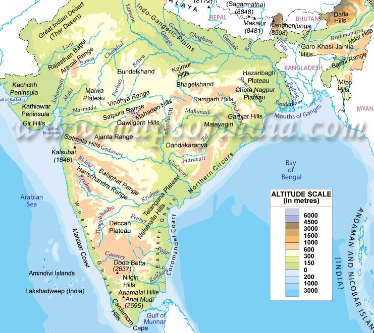

Physiographic Divisions of India
Elevated Peninsular Region
Map of Peninsular region

General Features
- Largest physiographic division, with an area of 16 lakh sq km
- General Elevation between 600-900 meters
- Bounded by
- Aravalli in the NW
- Hazaribagh and Rajmahal in the NE
- Western Ghats (Sahayadra mountains) in the W
- Eastern Ghats in the E
- Anai-Mudi of the Nilgiri is the highest peak 2695 m
Central Highlands
The Aravalli Range
- Runs from NE to SW from Delhi to Palanpur for about 800 km
- One of the oldest folded mountains of the world
- Mainly composed of quartz, gniess and schists of Precambrian age
- Highest peak is Guru Sikhar 1722 m
- The Goranghat Pass seperates Guru Sikhar from Mt. Abu
- The Great Boundary Fault seperates Aravalli from the Vindhyas
The Malwa Plateau
- Bounded by Aravallis to the NW, Bundelkhand plateau to the E and Vindhya to the S
- Has 2 Drainage systems
- Towards the Arabian Sea Narmada and Mahi
- Towards the Bay of Bengal Chambal, Betwa, Ken
The Bundelkhand Plateau
- Bounded by Yamuna river in the N, Vindhya in the S, and Malwa plateau to the W
- Streches over parts of UP, MP
- Mainly composed of Granite
The Vindhya Range
- Extended from West-Jobat (Gujarat) to East-Sararam (Bihar), almost prarallal to the Narmada valley for about 1200 km
- Composed mainly of Sandstone
- Sadbhawna Shikhar/Kalumar Peak is the higheat peak of the Vindhyas, only 750 m
- Eastern parts of Vindhya is known as Kaimur
- Creates a division between rivers of North and South India
Narmada Valley
- Situated to the south of the Vindhya
- Created due to parallel fault lines
- Denotes the bounadry of the Central Highlands
Eastern Highlands
Baghelkhand Plateau
- Situated to the South of Son river
- Bagelkhand is surrounded by the Indo-Gangetic plains in NE, Bundelkhand in W and the Vindhya range S and Chotanagpur plateau in E
- Composed mainly of Granite of Vindhyan age
Chotanagpur Plateau
- Sprawls over parts of West Bengal, Jharkhand, Chattisgarh, Odisha and North East of Andhra Pradesh
- Pareshnath is its highest peak 1366 m
- Western regions of the plateau are the highest regions, known as Pat Lands
- Composed of Archean granite, gniess rocks with patches of Dharwar, Damuda formations and lava flow of the Cretaceous period
- Barakar, Damodar, Subarnarekha drains the Chotanagour plateau
Mahanadi Basin & Chattisgarh Plains
- Mahanadi basin sprawls over Raipur, Bilaspur, Durg and Rajgarh
- Drained by Mahanadi and its tributaries i.e Seonath, Mand, Ib, Tel etc
- Chattisgarh plains are borderd by series of hills and plateaus
- The Gondwana formations are rich in bituminous coal
- The Rajhara hills contain Dharwarian rocks rich in haematite iron ore
Garhjat hills
- Known as Odisha highlands
- Bordered by Chotanagpur plateau in N, Mahanadi basin in the W
- Mainly composed of Archean rocks
Dandakaranya
- It is an undulating plateau
- Sprawls over parts of Odisha, Chattisgarh, Andhra Pradesh
- Its Abujhmar hills provide one of the richest iron ore deposits in the Bailadila range
- Drained by Tel and Udanti tributaries of Godavari
Southern Highlands
Satpura Range
- A series of seven ranges
- Lies to the South of the Vindhyas and in between Narmada and Tapi rivers
- Dhupgarh is its highest peak 1350 m
- Astamba Dongar (1325 m) and Amarkantak are two of its other major peaks
Nilgiri Range/Knot
Eastern Ghats (Malayadri)
Western Ghats (Sahayadri)
Maharashtra Plateau (Deccan Trap)
Meghalaya Plateau and Mikir Hills
- Consists of Garo, Khasi, Jayantia hills and the outlying Mikir and Rengma hills
- Seperated from southern plateau by Malda Gap
- Shilliong Peak is the highest elevation in this plateau 1823 m
- Nokrek is the highest peak of the Garo hills
- Southern range of the Mikir hills are knoen as Rengma hills
- This plateau is drained by Dhansiri and Jamuna rivers
Karantaka Plateau
Telengana Plateau